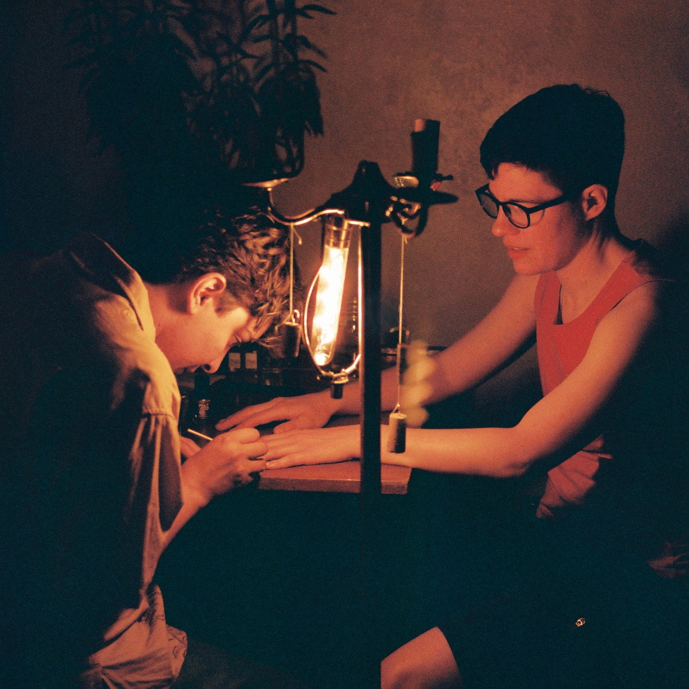
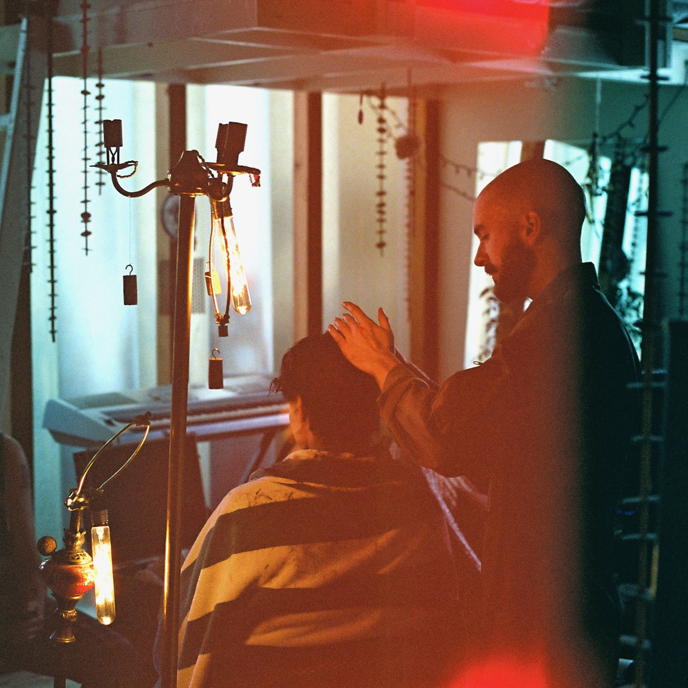
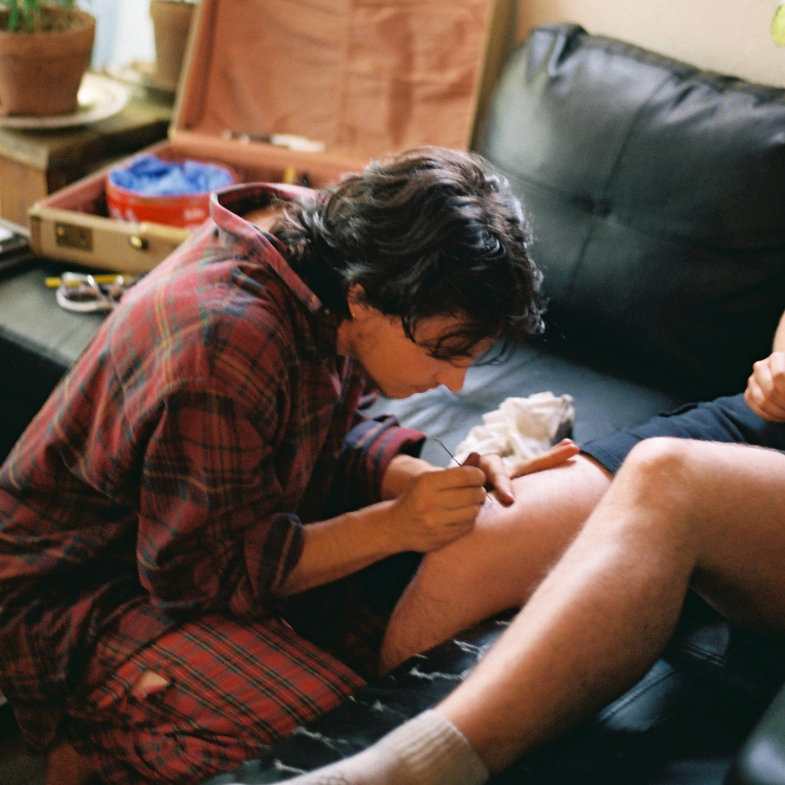

Albuquerque's own
One Stop Shop

Nails by Abdulmajeed

Hair by Jess

Stick & Poke by September
About
We are three artists who host pop-up events regularly. The next pop up event is Saturday, April 6th, 2024, in Burlington, VT! Sign up:
Core Values
- explicitly trans and queer friendly
- sliding scale payment/barter (arranged ahead of time)
- community and self-empowerment
If you would like one or several of our services available at your event, please reach out! If you would like an individual service, we do make house calls (within the confines of our "day" "jobs") - please reach out, though we can't guarantee anything. While One Stop Shop usually operates in Albuquerque, and Abdulmajeed and September live in the surrounding area, Jess resides in Philly ~75% of the year.
Contact: abqsonestopshop (at) gmail.com